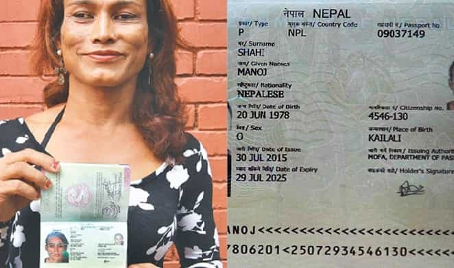

is an aspiring philosopher king, living the dream, travelling the world, hoarding FRNs and ignoring Americunts. He is a European at heart, lover of Latinas, and currently residing in the USA.


A female judge in a county court in Oregon has officially decreed that in 4,000 years of modern advancement, we failed to realize that besides man and woman, there is also a third category of transdoodle known as “non-binary.” Setting aside the fact that “non-binary” is a “non-answer” to the question “What sex are you?” (In the same way one cannot answer Are you pregnant? with “I’m non-binary.”) and indeed “attack helicopter” or “transdoodle” would be better choices than “non-binary,” this is a legal first.
While most rational people could laugh and chuckle as Tumblrinas and Facebook addicts changed the virtual world to reflect their fantasy that there are not two sexes of human (how many sexes of dog are there, by the way?), suddenly the ravings of the mentally ill mob have become a matter of law and public policy.
Similar to the manner in which a person may legally change their name by filing paperwork with the court, a person can now legally change their sex from male or female to “non-binary” in Oregon and California (more states to follow soon). A 52-year-old female lesbian army retiree, Jamie Shupe, decided 3 years ago that despite likely being in menopause already, she wanted to be a man. Let all that sink in for a moment.

Well, she DOES have a point…
Jaime has a female spouse of 27 years, and has refused surgery to make herself more masculine, so from what I can surmise, she is the bull-dyke butch of the relationship, and so why not just call herself a man. After all, Bruce Jenner is a brave and stunning woman, right? The Army resisted calling her a man unless she had surgery to change her sex, which, if there is any such thing as a rational position in the transgender arena, seems to be the only reasonable one. But Jaime refused the surgery. All of the benefits with none of the risk, right?
We know that 25% of women are mentally ill, and I’ll throw all the cash in my wallet in the pot and bet that both Jaime and her spouse fall into this category. She is not getting a penis. She likely is in menopause already. So she wants to be a dickless man that scissors with his wife? And on top of that wants to give up the all powerful pussy pass that she currently has? That sounds certainly insane.

In order to obtain a driver’s license, passport, credit card, or variety of other documents, one must select either male or female. There is simply no other option, and no other option is available to be displayed on the document. Anyway, if gender is something one can “choose,” then it’s entirely pointless to put down on an identification card in the first place. What’s the point in categorizing me as “male” when I can later choose to feel female? The category loses any value to the issuing agency.
Furthermore there different obligations and benefits based on one’s sex: Males must register for the military draft. Women can label sex “rape” or consensual based on their feelings, even after the fact. Women have an array of government benefits designated just for them (WIC, special women’s training, housing, and education plans). Women benefit from government hiring quotas. Women have the right to alimony and child support payments, and are granted default parenthood in the case of divorce. Females have special rights after childbirth (remind me to identify as female right after my wife gives birth, for some extra vacation time). Women hold the all-powerful pussy pass.
What will happen to all these differences if one is “non-binary?” Does one lose the rights and obligations of both men and women? Will non-binary people be granted their own special set of rights and obligations, with government programs and departments created just to serve their needs? Nepal and Australia have already issued “X” passports which are for special snowflakes that will die virgins.
Non-binary Oktoberfest
I never cared about gay issues, and thought, hey, if someone is gay, they have a rough life. Why not let them get married, and have parades if that makes them happy. I laughed at the old codgers who said this would lead to people lopping their dicks off or having sex with children or animals. Indeed, child sex is entering the arena of progressive causes that feminists adopt, and when no straight man is left on earth that wants to fornicate with them, I suppose they will turn to animal sex to satisfy their urges.
In retrospect, social change is not something that should be radically or quickly altered. Change is fine, but it must be adopted slowly, with much discussion, debate, consideration, and preparation. It should be tested and analyzed and carefully considered before it changes the very fabric of society. Our ancestors risked their lives, fortunes, and families in order to build and preserve a strong society with organized rules and moral standards. We are wiping away centuries of progress in mere months.
Looking back at the changes of the past 15 years, I shudder to think what the world will look like in even 5 more years. I cannot fathom what another 15 will look like. On the bright side, the government will now have a database identifying of all these freaks.
Read More: South Korea’s Draft Dodging Female President Tries To Play War Using Male-Only Conscripts